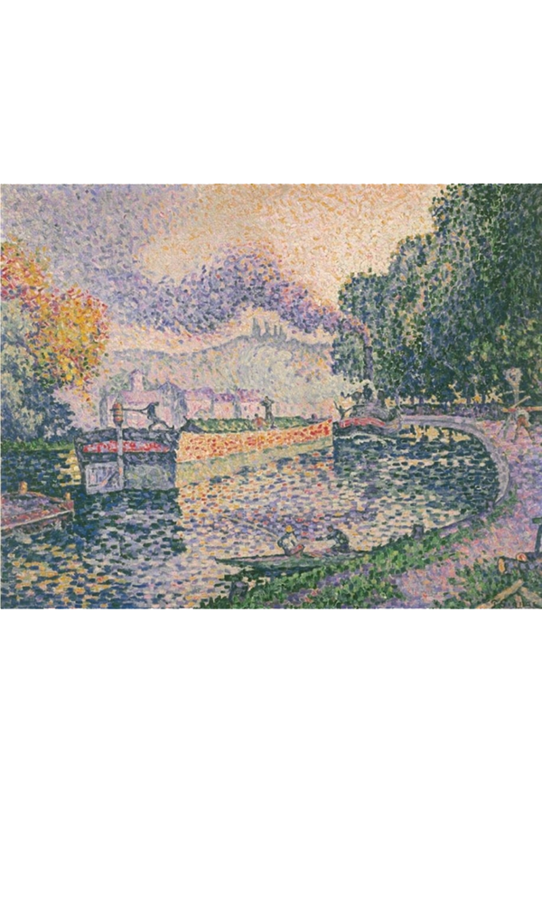

<div class="detail_content">
	<div class="img_book">
		
	</div>
	<section class="book_description">
		<h4>예인선, 사모아의 운하</h4>
		<ul class="bullet_list">
			<li><em>화가 </em> 폴 시냑</li>
			<li><em>제작 시기 </em> 1901년</li>
			<li><em>특징 </em> 점묘화</li>
			
		</ul>
		<p class="point_text">
			<strong>가장 먼저 눈에 띈 작품 </strong>
			<br>모자이크 같은 붓질과 색깔의 대비. 수면의 반사 표현
		</p>
		
	</section>
</div>